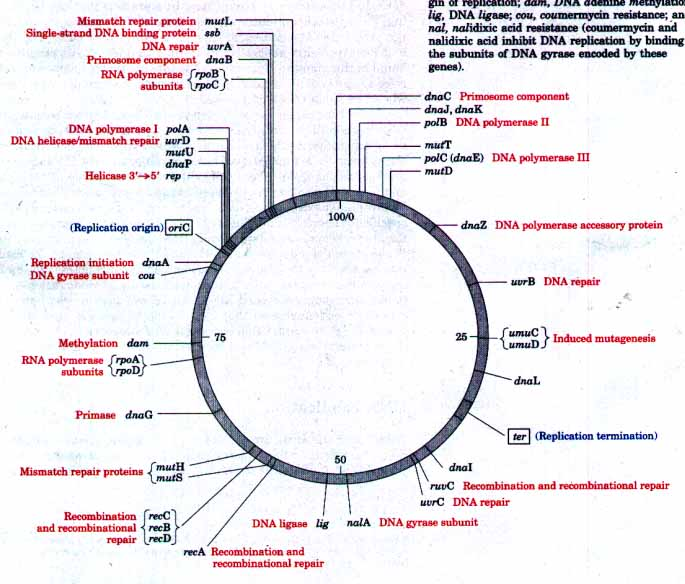
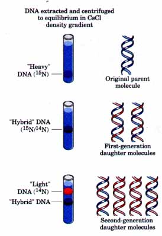
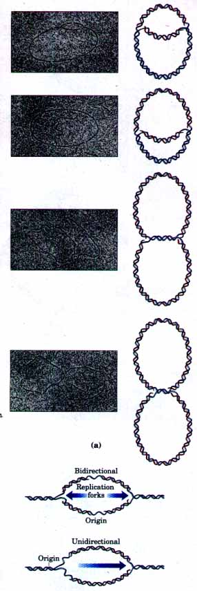
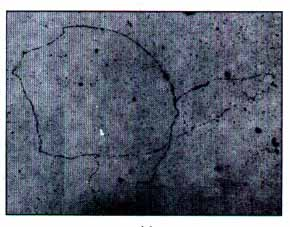
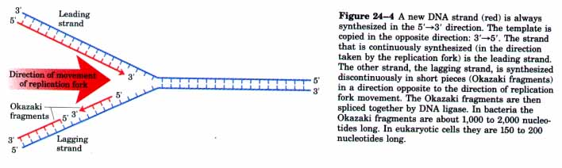

As the repository of genetic information, DNA occupies a unique and central place among biological macromolecules. The nucleotide sequences of DNA ultimately describe the primary structures of all cellular RNAs and proteins, and through enzymes can indirectly affect the synthesis of all other cellular constituents, determining the size, shape, and function of every living thing.
The structure of DNA is a marvelous device for the stable storage of genetic information. The phrase "stable storage," however, conveys a static and incomplete picture of the biochemical role of DNA in the cell. A proper description of DNA function must also explain how that information is transmitted from one generation of cells to the next. The term "DNA metabolism" can be used to describe the process by which faithful copies of DNA molecules are made (replication), along with the processes that affect the structure of the information within (repair and recombination). Together they are the focus of this chapter.
Perhaps more than any other factor, it is the requirement for an exquisite degree of accuracy that shapes these processes. At the level of joining one nucleotide to the next, the chemistry of DNA replication is simple and elegant, almost deceptively so. But as we will see, the synthesis of all macromolecules that contain information involves complex devices to ensure that the information is transmitted intact. If left uncorrected, errors in DNA synthesis can have dire consequences because they are essentially permanent. The enzymes that synthesize DNA must copy DNA molecules that often contain millions of bases, and they do so with great fidelity and speed. They must also act on a DNA substrate that is highly compacted and bound with other proteins. The enzymes that catalyze the formation of phosphodiester bonds are therefore only part of an elaborate system involving myriad proteins and enzymes.
The importance of maintaining the integrity of the information stored in DNA is underscored when the discussion turns to repair. As detailed in Chapter 12, DNA is susceptible to many types of damaging reactions. Though generally slow, they are nevertheless significant because of the very low biological tolerance for changes in DNA sequence. DNA is the only macromolecule for which repair systems exist, and their number, diversity, and complexity reflect the wide range of insults to which a DNA molecule is subject.
The processes by which genetic information is rearranged, collectively called recombination, seem to belie the principles just established. If the integrity of the genetic information is paramount, why rearrange it? One explanation seems to be the need for maintaining alevel of genetic diversity by providing new combinations of alleles, the alternative forms of a single gene. Even without this explanation, however, recombination is not really so renegade a set of processes. Most recombination events are conservative in the sense that genetic information is neither lost nor gained. Indeed, with a closer look at a recombination event, one often finds a DNA repair or gene regulation process in disguise.
Special emphasis is given in this chapter to the enzymes that catalyze these processes. They are well worth getting acquainted with if for no other reason than their everyday use as reagents in a wide range of modern biochemical technologies. Because many of the seminal discoveries in DNA metabolism have been made with E. coli, the well-understood enzymes obtained from this bacterium are generally used here to illustrate the ground rules. A quick look at the relevant genes on the E. colz genetic map (Fig. 24-1) provides just a hint of what is to come.

Figure 24-1 A map of the E. coli chromosome, showing the relative positions of genes encoding some of the proteins important in DNA metabolism. The number of known genes involved provides a hint of the complexity of these processes. The numbers 0 to 100 denote a genetic measurement called minutes, with each minute corresponding to about 40,000 base pairs. The acronyms consisting of three lowercase letters generally reflect some aspect of the gene's function. These include mut, mutagenesis; dna, DNA replication; pol, DNA polymerase; rpo, RNA polymerase; uur, UV-resistance; rec, recombination; ter, termination of replication; ori, origin of replication; dam, DNA adenine methylation; lig, DNA ligase; cou, coumermycin resistance; and nczl, nalidixic acid resistance (coumermycin and nalidixic acid inhibit DNA replication by binding to the subunits of DNA gyrase encoded by these genes).
Before moving on to replication, we must entertain two short digressions. The first concerns the use of acronyms in naming genes and proteins. Bacterial genetics is a powerful tool that has facilitated much of the work described in this chapter. Bacterial genes that affect a given cellular process such as replication often have been identified before the roles of their protein products were understood. By convention, acronyms used to identify bacterial (and sometimes eukaryotic? genes are generally three lowercase, italicized letters that reflect function, such as dna, uur, or rec for genes that affect DNA replication, resistance to the damaging effects of LIV radiation, or recombination, respectively. In the case of multiple genes that affect the same process, the designation A, B, C, etc., is added, usually reflecting the temporal order of gene discovery rather than a reaction sequence. In most cases, the protein product of each gene is ultimately isolated and characterized. Sometimes the product is identified as a previously isolated protein. The dnaE gene, for example, was found to encode the polymerizing subunit of DNA polymerase III; consequently, the dnaE gene was renamed poLC to reflect that function more clearly. In many cases the protein product has turned out to be novel, with an activity not easily described by a simple enzyme name. In a practice that can be confusing, these proteins often retain the name of their genes; for example, the products of the dnaA and recA genes are simply called the DnaA and RecA proteins, respectively. Many examples of this practice are found in this chapter. Here we use the convention that names in italics refer to genes or important DNA sequences, and roman type is used when the name refers to a protein.*
*For eukaryotic proteins, these naming conventions are somewhat different and vary sufficiently from one organism to the next that no single convention can be presented here.
The second digression is needed to introduce enzymes that degrade DNA rather than synthesize it, because directed DNA degradation plays a significant role in all of the processes described in this chapter. These enzymes are called nucleases or, alternatively, DNases if they are specific for DNA. Every cell contains several different nucleases, and these fall into two broad classes: exonucleases and endonucleases. Exonucleases degrade DNA from one end of the molecule. Many are specific for degradation in either the 5'→3' or 3'→5' direction; that is, they remove nucleotides specifically from the 5' or 3' end, respectively, of one strand of a double-stranded nucleic acid (see Fig. 12-7). Endonucleases act in the interior of nucleic acids, reducing them to smaller and smaller fragments. A few exonucleases and endonucleases degrade only single-stranded DNA. There are also a few important classes of endonucleases that cleave only at specific nucleotide sequences (e.g., the restriction endonucleases considered in Chapter 28). Many types of nucleases will be encountered in this and subsequent chapters.
Long before the structure of DNA became known, scientists had wondered first at the ability of organisms to create reasonable copies of themselves, and later at the ability of cells to produce many identical copies of large and complex macromolecules. Speculation about these problems centered around the concept of a template. The molecular template had to be a surface upon which molecules could be lined up in a specific order and joined to create a macromolecule with a unique structure and function.
The process of DNA replication provided the first biological example of the use of a molecular template to guide the synthesis of a macromolecule. The 1940s brought the revelation that DNA was the genetic molecule, but not until James Watson and Francis Crick deduced its structure did it become clear how DNA could act as a template for the replication and transmission of genetic information. One strand is the complement of the other. The strict base-pairing rules mean that the use of one strand as a template will result in another strand with a predictable, complementary sequence.
The fundamental properties of the DNA replication process and the mechanisms used by the enzymes that catalyze it have proven to be essentially identical in all organisms. This mechanistic unity will be a major theme as we proceed from general properties of the replication process to E. coli replication enzymes and finally to replication in eukaryotes.
| DNA Replication Is
Semiconservative If each DNA strand serves
as a template for the synthesis of a new strand, two new
DNA molecules will result, each with one new strand and
one old strand. This is called semiconservative
replication. The hypothesis of semiconservative replication was proposed by Watson and Crick soon after publication of their paper on the structure of DNA; the theory was proven in ingeniously designed experiments by Matthew Meselson and Franklin Stahl in 1957 (Fig. 24-2). Meselson and Stahl grew E. coli cells for many generations in a medium in which the sole nitrogen source (NH4Cl) contained 15N, the "heavy" isotope of nitrogen, instead of the normal, more abundant "light" isotope 14N. The DNA isolated from these cells had a density about 1% greater than that of normal [l4N]DNA. Although this is only a small difference, a mixture of heavy [15N ]DNA and light [14N]DNA can be separated by centrifugation to equilibrium in a cesium chloride density gradient. The E. coli cells grown in the 15N medium were transferred to a fresh medium containing only the l4N isotope, where they were allowed to grow until the cell population had just doubled. The DNA isolated from these first-generation cells formed a single band in the CsCl gradient at a position indicating that the double-helical DNAs of the daughter cells were hybrids containing one new 14N strand and one parental 15N strand (Fig. 24-2). This result argued against conservative replication, an alternative hypothesis in which one progeny DNA molecule would consist of two newly synthesized DNA strands and the other would contain the two parental strands; this would never yield hybrid DNA molecules in the Meselson-Stahl experiment. The semiconservative replication hypothesis was further supported in the next step of the experiment. Cells were allowed to double in number again in the 14N medium, and the isolated DNA product of this second cycle of replication exhibited two bands, one having a density equal to that of light DNA and the other having the density of the hybrid DNA observed after the first cell doubling. |
 Figure 24-2 The Meselson-Stahl experiment was designed to distinguish between two alternative DNA replication mechanisms. Cells were grown for many generations in a medium containing only heavy nitrogen, 15N, so that all the nitrogen in the DNA was 15N. The cells were then transferred to a medium containing only light nitrogen, 14N, and the density of the DNA was monitored closely for the next two cell generations. Cellular DNA was isolated after the first and second generations and centrifuged to equilibrium in a CsCl density gradient. The [15N]DNA (shown in blue) came to equilibrium at a lower position in the CsCl gradient than [14N]DNA (shown in red). Hybrid DNA equilibrated in an intermediate position. If DNA replication were conservative, each of the two heavy strands of parental DNA would be replicated to yield the ariginal heavy duplex DNA and a DNA duplex containing two new light strands. Continuation of conservative replication would yield in the next generation one heavy DNA and three light DNAs but no hybrid DNAs. The Meselson-Stahl experiment, however, showed that replication is semiconservative, resulting in two daughter duplexes each containing one parental heavy strand and one new light strand. The next generation yielded two hybrid DNAs and two light DNAs. |
Replication Begins at an Origin and Usually Proceeds Bidirectionally A host of questions now arises. Are the parental DNA strands completely unwound before each is replicated? Does replication begin at random places or at a unique point? After initiation at any point in the DNA, does replication proceed in one direction or both? An early indication that replication is a highly coordinated process in which the parental strands are unwound and replicated simultaneously was provided by John Cairns using the technique of autoradiography. He made the DNA of E. coli cells radioactive by growing them in a medium containing thymidine labeled with tritium (3H). When the DNA was carefully isolated, spread, and overlaid with a photographic emulsion, and left for several weeks, the radioactive thymidine residues generated "tracks" of silver grains in the emulsion, producing an image of the DNA molecule. These tracks revealed that the intact chromosome of E. coli is a single giant circle, 1.7 mm long (see Fig. 23-2). Radioactive DNA isolated from cells during replication showed an extra radioactive loop (Fig. 24-3). The amount of radioactivity in the loop relative to the remainder of the DNA led Cairns to conclude that the loop in the DNA was the result of the formation of two radioactive daughter strands, each complementary to a parent strand. One or both ends of the loop are dynamic points, termed replication forks, where parental DNA is being unwound and the separated strands quickly replicated. This demonstrated that both DNA strands are replicated simultaneously, and a variation of this experiment (Fig. 24-3b) indicated that replication of bacterial chromosomes is bidirectional: both ends of the loop have active replication forks. To determine whether the loops originated at a unique point in the DNA, landmarks were needed in the DNA "string." These were provided by a technique called denaturation mapping, developed by Ross Inman and colleagues. Using the 48,502 base pair chromosome from bacteriophage λ, Inman showed that DNA could be selectively denatured at sequences unusually rich in A=T base pairs. This generates a reproducible pattern of single-stranded bubbles (see Fig. 12-30). When isolated DNAs containing replication loops are partially denatured in this way, the progress of the replication forks can be measured and mapped using the denatured regions as points of reference. The technique revealed that the replication loops always initiate at a unique point, called an origin. In addition, this work reinforced the earlier observation that replication is usually bidirectional. For circular DNA molecules, the two replication forks meet at a point on the side of the circle opposite to the origin. |
 (b)  (c) Figure 24-3 Replication of a circular chromosome produces a structure resembling the Greek letter theta (θ). (a) Labeling with tritium (3H) shows that both strands are replicated at the same time (new strands shown in red). The electron micrographs illustrate the replication of a circular E. coli plasmid as visualized by autoradiography. (b) Addition of 3H for a short period just before the reaction is stopped allows a distinction to be made between unidirectional and bidirectional replication, by determining whether label (in red) is found at one or both replication forks seen in autoradiograms. This technique has revealed bidirectional replication in E. coli, B. subtilis, and other bacteria. (c) Autoradiogram of a replicating E. coli chromosome taken from a culture grown for two generations in [3H] thymidine.. |
DNA Synthesis Proceeds in a 5'→3' Direction and Is Semidzseonttnuous A new strand of DNA is always synthesized in the 5'→3' direction (the 5' and 3' ends of a DNA strand are defmed as shown in Figure 12-7). Because the two DNA strands are antiparallel, the strand acting as template is being read from its 3' end toward its 5' end.
If synthesis always proceeds in the 5'→3' direction, how can both strands be synthesized simultaneously? If both were synthesized continuously as the replication fork moved, one would have to undergo 3'→5' synthesis. This problem was resolved by Reiji Okazaki and colleagues in the 1960s. Okazaki found that one of the new DNA strands is synthesized in short pieces, now called Okazaki fragments. This work ultimately led to the conclusion that one strand is synthesized continuously and the other discontinuously (Fig. 24-4). The continuous or leading strand is the one in which 5'→3' synthesis proceeds in the same direction as replication fork movement. The discontinuous or lagging strand is the one in which 5'→3' synthesis proceeds in the direction opposite to the direction of fork movement. Okazaki fragments range in length from a few hundred to a few thousand nucleotides, depending on the cell type.
